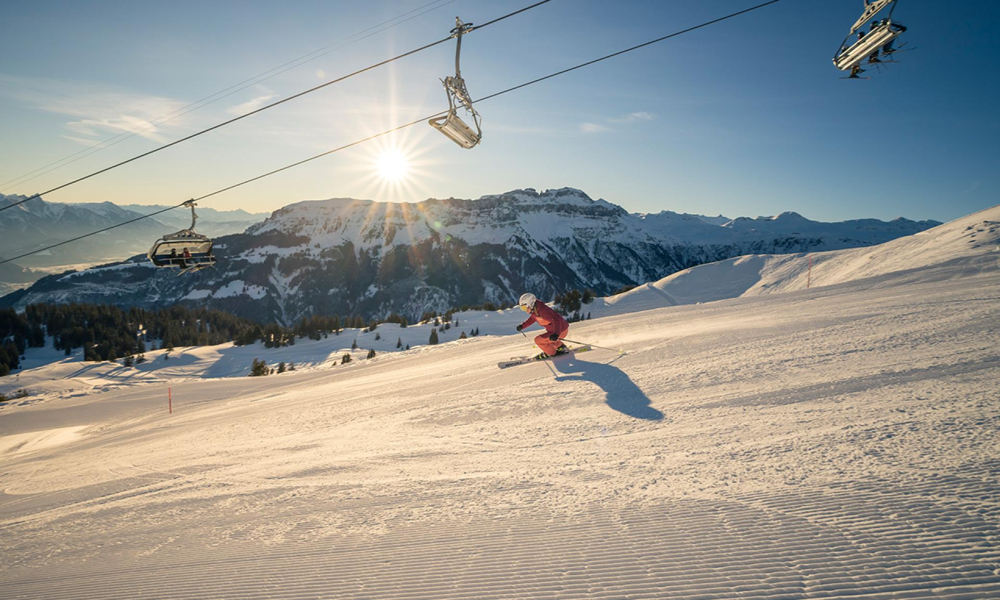
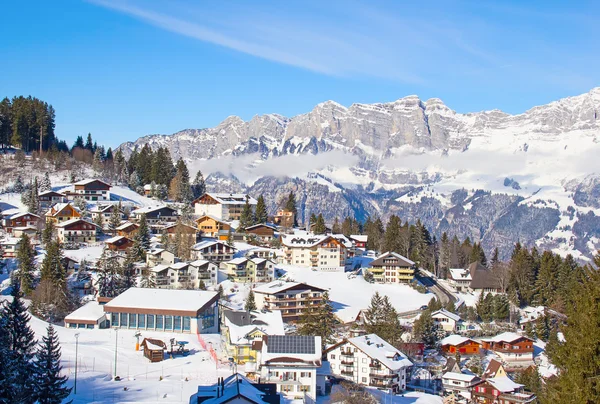
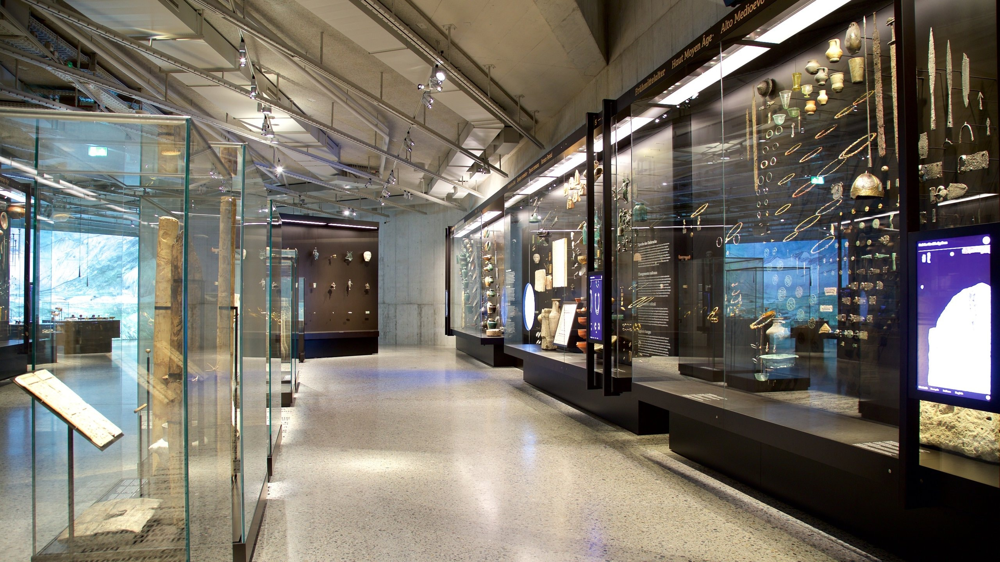
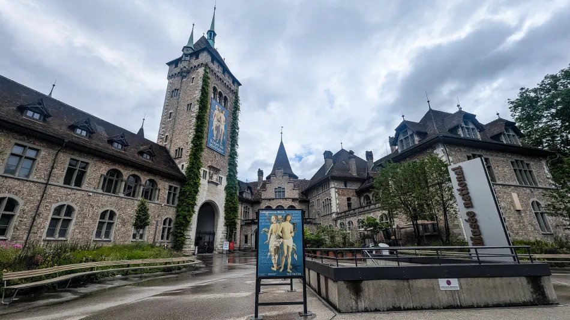
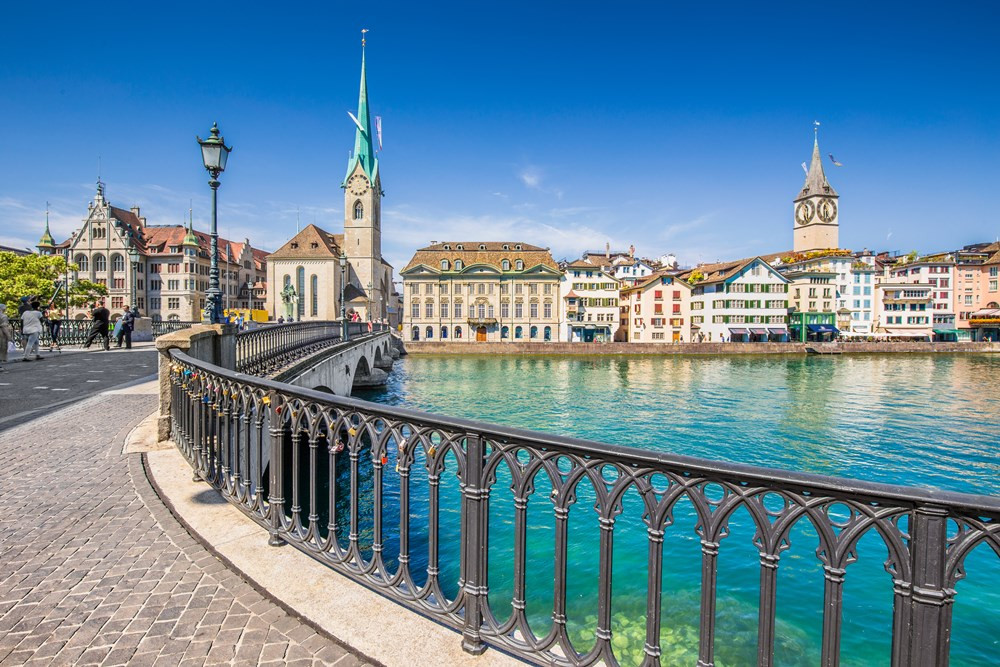
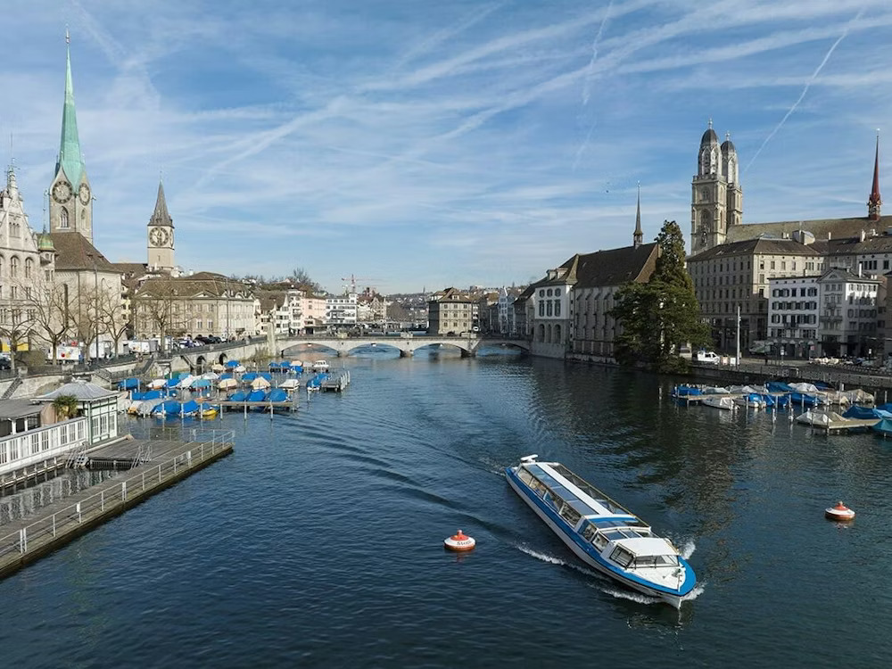

瑞士 | 蘇黎世 | 2025 6日湖畔到雪山冒險
航空交通
香港至蘇黎世的航線是連接亞洲與歐洲的重要航點。旅客可選擇直航航班， 由瑞士航空或國泰航空營運，航程約 12–13小時。若希望節省票價或增加彈性， 亦可選擇轉機航班，如卡塔爾航空、阿聯酋航空、土耳其航空等， 通常在多哈、杜拜或伊斯坦堡中轉。這些航班的總旅程時間約 15–20小時。
票價方面，經濟艙單程票最低約 HK$4,000–HK$5,000，若提前預訂或選擇轉機航班， 甚至能找到更優惠的價格。商務艙與頭等艙則提供更寬敞的座位與高端餐飲， 適合長途旅客或商務人士。
房間住宿
蘇黎世作為瑞士的金融與文化中心，住宿選擇豐富多樣。若追求奢華體驗， 市中心的 Baur au Lac、Park Hyatt Zurich 或 Mandarin Oriental Savoy 等五星級酒店，提供寬敞房間、精緻餐飲與湖畔美景，適合商務旅客或高端休閒。 這些酒店通常設有健身房、水療中心與專屬禮賓服務，讓旅程更舒適。
對於預算有限或背包客，蘇黎世也有許多 青年旅舍與平價旅館， 如 Zurich Youth Hostel，提供乾淨簡單的房間與公共設施，價格相對親民。 這些住宿通常位於交通便利的地點，方便旅人自由安排行程。
歷史與文化
早在新石器時代便有人類在蘇黎世湖畔定居。公元前 57 年， 羅馬人在此建立了名為 Turicum 的關稅站，成為歐洲貿易的重要據點2。 中世紀時期，蘇黎世的政治與宗教權力集中在格羅斯大教堂 (Grossmünster) 與聖母大教堂 (Fraumünster)，修道院在城市發展中扮演核心角色。
14 世紀的行會革命使蘇黎世加入瑞士邦聯，逐漸成為重要的自治城市。 16 世紀，宗教改革領袖慈運理(Huldrych Zwingli) 在蘇黎世推動改革， 使城市成為新教思想的中心。隨後，蘇黎世因絲綢與紡織業而繁榮，奠定了經濟基礎。
今日的蘇黎世不僅是瑞士的金融樞紐，也是文化重鎮。 古老的舊城區保存著蜿蜒街道與中世紀建築，而現代的美術館、 劇院與音樂廳則展現城市的創新精神。蘇黎世的文化特色在於古今交融： 遊客既能在歷史遺跡中感受過去的厚重，也能在當代藝術與設計中體驗未來的活力。
必訪景點
-
🎿 Flumserberg 滑雪場
距離蘇黎世約 90 分鐘車程的 Flumserberg，是最近且最受歡迎的滑雪場。 擁有多條雪道，適合初學者與高手。冬季可體驗滑雪、單板與雪橇， 並享受山中餐廳的瑞士美食。這裡是蘇黎世旅人冬季必訪的滑雪天堂。


-
🏛️ 瑞士國家博物館
位於市中心的國家博物館，外觀如童話城堡，館內展示瑞士歷史、 文化與藝術。從古代文物到現代設計，展品豐富。 這裡是了解瑞士多元文化與民族精神的最佳場所，適合喜愛歷史的旅人。


-
🌊 蘇黎世湖
蘇黎世湖是市民休閒的好去處，湖畔步道適合散步、騎行或乘船遊湖。 夏季可在湖邊野餐或游泳，冬季則欣賞雪景。湖光山色交織， 展現瑞士自然之美，是放鬆心情的最佳地點。


旅遊實用資訊
- 建議購買 Zürich Card 可享受市內交通（電車、公車、火車、船隻）無限次搭乘，並包含博物館折扣。
- 可租借 Wi-Fi 裝置 或購買瑞士 SIM 卡。蘇黎世機場有多家電信櫃台。
- 建議手機安裝 SBB Mobile 和 ZVV Ticket App 用於查詢火車時刻和公共交通票務。
- 當地使用瑞士法郎 (CHF)。信用卡普遍接受，但小額消費建議攜帶現金。
- 瑞士人非常重視準時，搭乘交通工具或赴約務必守時。公共場合請保持安靜，避免大聲喧嘩。 餐廳小費非強制，但可將帳單金額四捨五入。